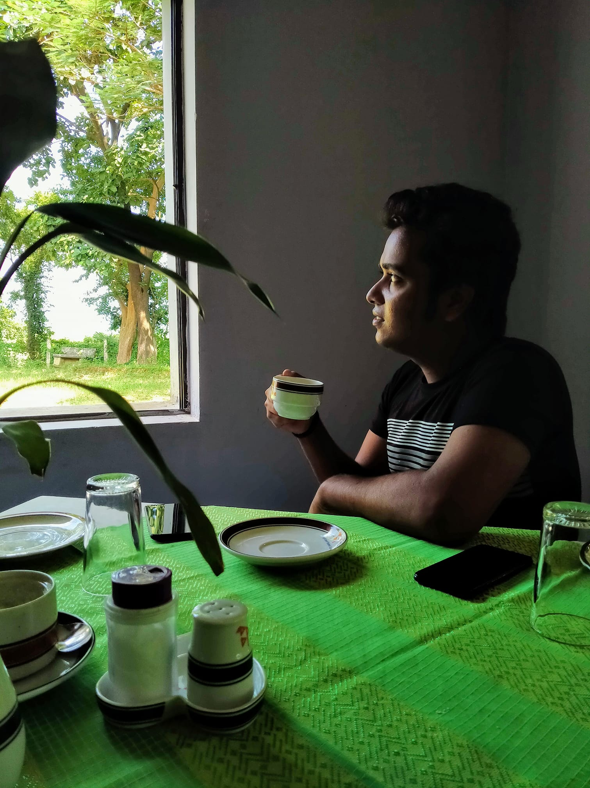
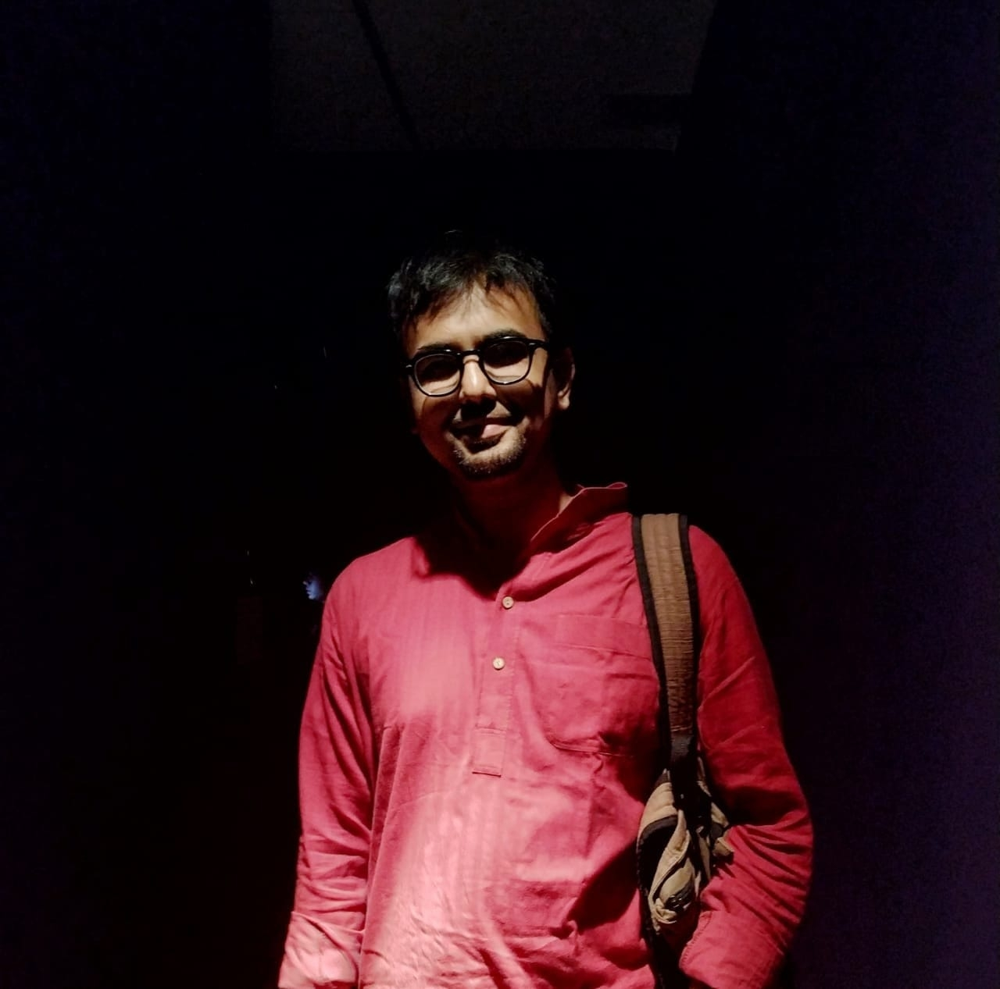

Testimonials

Rahat Iqbal Chowdhury
I had the pleasure of working with Kawser Ahmed during our time together, and I can confidently say he is a dedicated, hardworking, and highly skilled professional.

Deb Dulal Baidya
It has been a privilege to work with Kawser Ahmed, and I have witnessed firsthand his commitment to growth and excellence in software development.

Sirajus Salekin
I had the opportunity to work with Kawser Ahmed on several occasions, and each time he demonstrated exceptional dedication and technical skill.